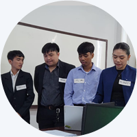

The eRecords proposal addresses a clear and pressing need: digitization and better management of employee 201 files at the Schools Division Office of Roxas City. The document is generally complete and well structured. It provides a strong context, a reasonable set of objectives, a wide-ranging literature review that cites many comparable systems, and an Agile-based methodology suitable for iterative development.
Major strengths include a clear problem context, comprehensive list of documents to be digitized, and relevant related studies. Key weaknesses are limited technical detail on security controls and backup strategy, absence of concrete sample sizes for user studies, and lack of a simple database schema or entity-relationship overview. The proposal would benefit from stronger mapping between theory and measurable evaluation metrics and a clearer demonstration of prototype readiness.
| Item | Evaluation | ||||||||||
|---|---|---|---|---|---|---|---|---|---|---|---|
| Problem Definition |
The proposal clearly describes the current paper-based or semi-digital processes and their consequences such as slow retrieval, misplaced files, and compliance risk. The background references national initiatives and similar systems, which situates the problem well. Issues to fix: The Statement of the Problem should be reformatted into one concise General Problem followed by numbered Specific Problems to make alignment with objectives easier. |
||||||||||
| Objectives |
The general objective and specific objectives map to core modules: Employee Information Management, Document Management, and Report Generation. The objectives capture system purpose and scope. Suggestion: Revise wording so objectives emphasize project outcomes and improvements rather than only listing modules. The earlier guidance on avoiding feature-like objectives applies here.
|
||||||||||
| Theoretical and Conceptual Framework |
The Task-Technology Fit model is appropriate for this system. The conceptual framework lists modules and actors clearly: Admin, Staff, Employee, Authentication, File Upload, Document Management, Search, Audit Logs, and Database. Suggestion: Add one or two complementary theories such as Information Systems Success (DeLone and McLean) or Technology Acceptance Model to strengthen evaluation rationale and link theory to metrics. |
||||||||||
| Scope and Limitations |
Scope focuses on SDO Roxas City and digitization of the 18 required 201 documents. Limitations list infrastructure, budget, and staff expertise as constraints. Suggestion: Clarify what is excluded (for example student records, financial systems), state whether the system will be accessible outside the SDO network, and include basic retention and archival policy notes. |
| Item | Evaluation |
|---|---|
| Coverage |
The review is broad and includes many relevant local and international studies and systems. Examples such as EDMS implementations and HRIS in educational institutions are appropriately referenced. |
| Analysis and Synthesis |
The synthesis identifies common features across prior works like centralized repositories, search, and security. The proposal positions eRecords to build on these strengths. Issue: The synthesis remains general. It should draw out specific technical or policy gaps in the comparative systems and tie each gap to a design choice in eRecords. |
| References |
References are numerous and relevant. Many sources are conference or project reports and web documents. Consider adding policy or standards references such as DepEd circulars or Data Privacy Commission materials if available. |
| Item | Evaluation |
|---|---|
| Development Method |
Agile is an appropriate choice for iterative development and stakeholder involvement. The phases are logical: planning, requirements, design, coding, testing, deployment, feedback. Issue: The plan does not state sprint length, sprint deliverables, or sample backlog items. Stakeholder engagement is mentioned but lacks numeric detail. |
| Requirements Gathering |
Methods listed include interviews, observation, and document review. The proposal recognizes the need to meet Records Unit and HR personnel to collect needs. Issue: No sample sizes or selection criteria are provided for surveys or interviews. Add target numbers for respondents and describe how participants will be chosen. |
| Design and Technical Plan |
The conceptual design, DFDs and module descriptions are helpful. The role definitions and process flow are clear. Issue: The proposal lacks a visible database schema, description of file storage (object store vs database BLOBs), and explicit security controls such as encryption methods and backup strategy. |
| Testing and Evaluation |
Testing phases are described: unit, integration, UAT, and production deployment. Metrics such as user satisfaction and efficiency are named. Suggestion: Define measurable acceptance criteria and sample sizes, and align evaluation items to ISO/IEC 25010 quality attributes for clarity. |